从很久之前开始我就一直在想，我总是要写点什么的，这并不是因为我的见解多深刻或视角多独特以至于一定要写出来才行，只是试图借文字理清我那些不怎么清楚的想法和感受。我一直认为作品是只有被它的观众看到的那一刻才算完成了的，而将看到的画面和听到的声音转化为自己能够理解的东西本身就是一种再创作，所以我的行为大概可以被解释为一种致敬，对少女歌剧这样难得的优秀作品进行的模仿创作。虽然是拙劣的模仿，但我想这是我一定要做的，如同剧场版中的舞台少女们一样，完成一直以来没能完成的执念，然后才可能走向下一个舞台。
两人的高速公路
作为wi(l)d-screen baroque的第一幕，花叶revue也承担了展示剧场版中revue的风格的作用。对revue的解读存在很多的讨论和说法，这里我并不想过多纠结死的设定，我采用这样的理解：revue即是舞台，而在revue中发生的一切，包括revue本身，也都属于舞台的范畴。剧场版的revue的风格的明显变化也是符合这一理解的，不再起选拔作用的revue的内容也不再仅仅是舞台少女们以试图砍掉对方的披肩的形式分个胜负。这无疑更加增加了revue的表现能力。
另外一个值得注意的点是，舞台脱离了圣翔音乐学院的地下，而是在未知的地点，或者是不属于世界上任何一个位置的地点上演。在花叶revue的最开始，我们仍然可以看到熟悉的东京塔和我们预期的会在revue中出现的内容。
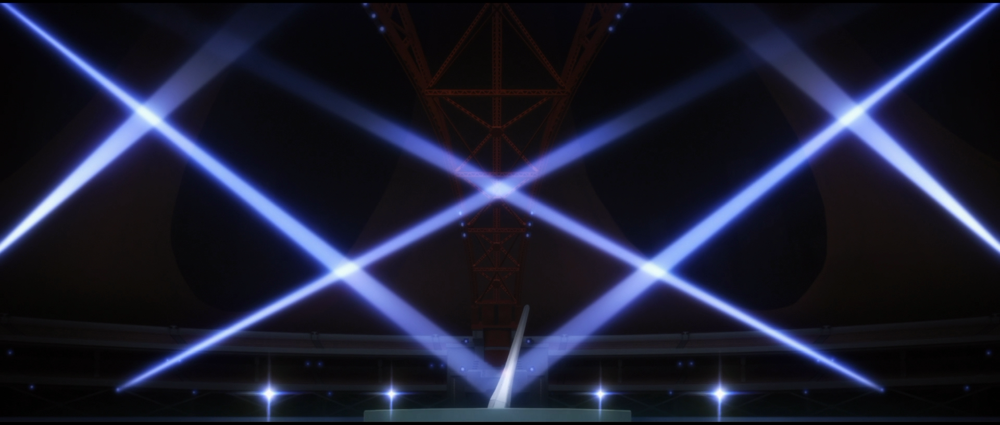
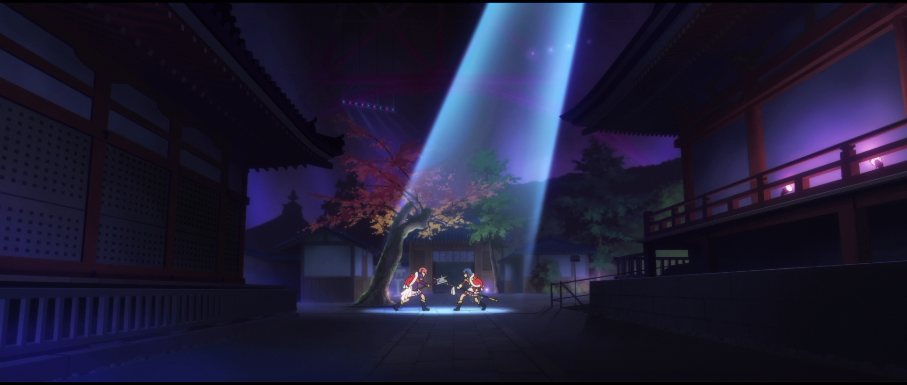
而在双叶说出“我是为了你好”之后，场景发生了转换。可以看出这里的舞台设定是心虚的男人和已经知道一切的女人互相摊牌，这无疑也是与花叶符合的。双叶不继续留在香子身边当然不都是为了香子，而香子对这点也是心知肚明，因此能够怼得双叶说不出话来。内容上，这是对花叶过去的关系的持续的否定，而这里的舞台整体风格的改变也可以看做在另外一个维度上的，对TV中已经定型的revue形式的否定。这种否定，或是说创新，也可以很容易地在后面的revue中发现。
当然，（好不容易做得这么好的）TV的内容也并没有被完全否定。与约定的revue香子试图割断自己的披肩那里类似，怨恨的revue止于香子自己把自己的车开了下去。
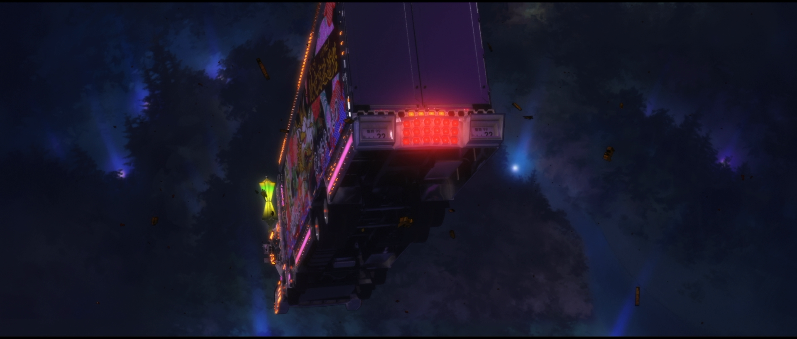
这也是我在花叶revue中最受到冲击的画面（不觉得和odd taxi最终话的名场面很像吗）这里的相似在于，事实上香子从头到尾都明白一切，她的行为只是为了看到双叶表现出的行动。在TV中是希望得到双叶的挽留以确认她对自己的重视，而在这里要确认的大概就是双叶离她而去追寻自己的舞台的决心。让她满足的不是“为了你好”的讲不通的表面话，而是“不能继续在一起了”的真心。在最后的最后，双叶虽然离开香子，但仍然由不讲理的任性延续了她们的缘分。这也是颇有花叶风味的展开，一向被任性的双叶在最后提出了最大的任性，而从岔路口分开抵达不同目的地的两人也可能以不是“追逐与被追逐”的形式重逢。
用演技表达的真心
纵观剧场版的所有revue，光昼revue的独特性在于其高潮部分的真情流露并不是借由revue的演出的内容，而是借由表演这一行为本身。真昼的一连串嘲讽和恐吓当然不是真心话，其目的如果仅仅是为了让小光正视她和华恋的舞台上还存在没做完的事，那么自然存在更多更温和的方式，而真昼的选择是拉小光来到由她表演的舞台。这里真昼的性质得到强烈的表现，如果我们不去管在戏里和戏外都被过分强调的真昼身上的扭曲戏份，她实际上也是热爱舞台、渴望闪耀的舞台少女。从动画里考虑，这场revue是在让小光表达她没做完的事；而从动画之外考虑，这也是在完成真昼在摆脱对华恋病态的依赖之后的缺失的塑造。在正午的阳光的背景之中闪耀，投下温暖的光芒，这才是名为露崎真昼的星。
另外，revue中的恐怖表现也让我惊艳。我确实从未预期过能在少女歌剧中看到恐怖的演出，这也确实是无法预料的舞台了。
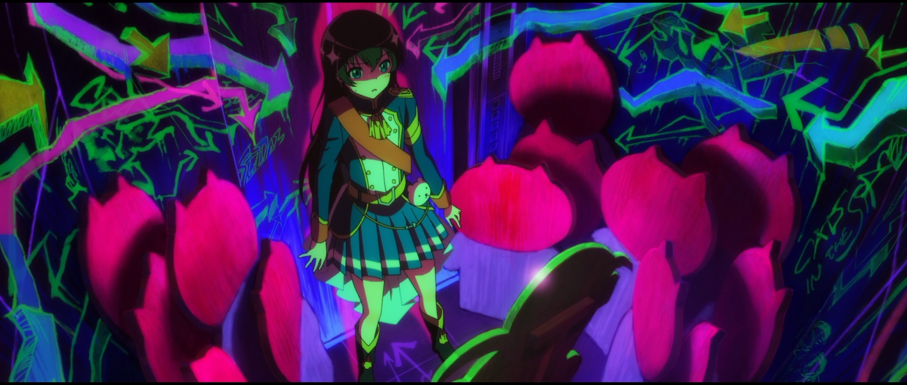
最后是一些完全的个人内容，由于一些早期的原因，我对光昼这对组合心里一直有些意见，因此在被剧透到剧场版会有这一场revue时，我心里确实存在些许担心，会不会整一些我不愿看到的烂活。但毕竟少女歌剧是少女歌剧，能让我乖乖放下成见感动到落泪，这也是这部作品所拥有的能力啊。
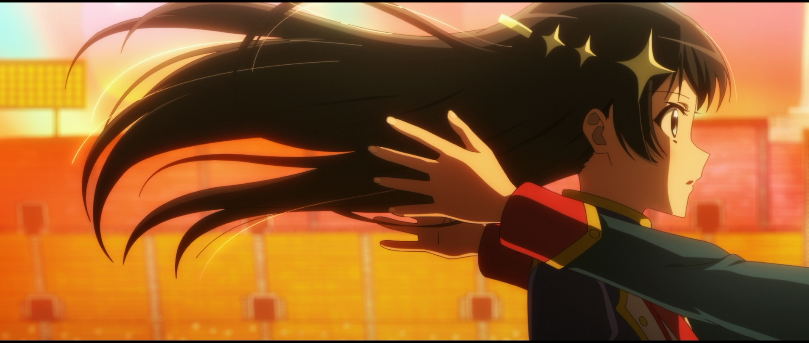
耀眼之物处在自己的舞台
很遗憾地承认，在看了很多遍之后，我仍然没法抓到一个解读蕉纯revue的头绪。不过即便如此，我的感受也并非只是“我不懂”，因为这里仍然存在一些能让我可以抓住的点。
可以注意到的是这场revue中关于蕉纯二人存在很多的对称性，例如最开始和最后的“给她弄哭了啊”，被斩断的纯那的名言（“星”）和奈奈的刀，甚至这个像是Python切片表达式的歌名在某种程度上也可以看做是一种对称。
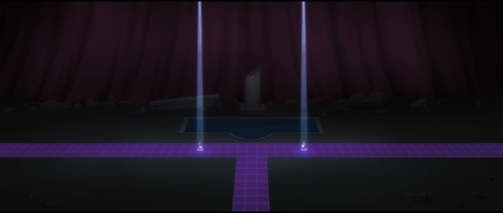
这种大量存在的对称性大概也可以理解为对蕉纯本身的关系的隐喻，因为我们可以看得到奈奈对纯那“届不到”的否定（这里蕉斩断了纯的“星”）使纯那意识到单纯复读名言是不行的，从而将名言的力量真正转化为自身的力量；而纯那对奈奈预期的打破（这里纯斩断了蕉的刀）则使奈奈最终放弃了仅存在于他人身上和过去的再演。可以认为蕉纯二人在对方的心态转变上都起到了类似的作用。
在revue的最后，奈奈感叹“我的再演在现在结束了”。这必然不是指对99届圣翔祭的再演，它在一年前（或三年前）就结束了，我对这句话的理解是，这里的“再演”指的是将自己的舞台放在他人身上的行为。如同对99届圣翔祭的再演中奈奈告诉自己的她在试图从她以为的可怖的未来中保护大家，此时她所需要看到的也是纯那保持她认为的“我的纯那酱”的形象，即使这意味着作为舞台少女的枯萎凋零。也和羁绊的revue的华恋类似，纯那斩断了奈奈为她制作的舞台，从而终止了奈奈的再演。此时的蕉纯的前方都是只属于自己的舞台，只在那里她们能找到自己的闪耀之物。
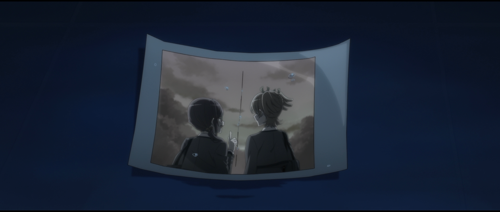
展露灵魂的毕业演出
迷宫的revue大概可以说是剧场版中最华丽的一场，同时也可以说是最“舞台”的一场。和其余的revue要处理的人物如何向不同的前路迈进不同，迷宫revue给我的感觉更多是一场集大成的毕业演出。舞台的不同阶段内容差异巨大，衔接却十分流畅，比起仅仅在这一出舞台上演出的内容，理解成长久以来的心意的互相显露倒更自然一些。
当然，这并不意味着这场revue的存在不那么重要。因为迷宫revue中要讲述的不是如何登上舞台，而是如何从完美的舞台之神的容器退化为存在缺陷与污点的人。这大概也可以用于理解这场revue的结局，只有成为存在缺陷的人的真矢的眼睛才能看到同样存在缺陷的克洛却也如此的美丽。
至于华丽的演出效果，虽然我更享受的是这个，但并不容易用文字描述。这里只说一处，让我最震撼的是在最后，真矢惊叹于克洛的美丽，和舞台的设定一样，展现出了她未曾见过的光芒的克洛让真矢展露出了她的灵魂。随着契约兑现，整座舞台燃起熊熊烈火。很难讲述震撼的由来，只能说这是最适合华丽的舞台的华丽的终结方式了吧。
你即是我，我即是你
这部分会长一点，因为我的成分，懂的都懂。
华恋的内面
我第一次体会到少歌的美和震撼是在第不知多少次再演时，大概也是从那一刻起我就是华恋推了，虽然当时我可能还没意识到这一点。我记不起那是什么时候，一个我能记起的时间点是在20年初我剪完约定之塔的MAD之后，那时我意识到TV中华恋的形象似乎存在一些两面性。在舞台上的华恋是不讲理的傲慢的，她在TV的revue中的表现，即对对方说的话强行进行不相关的否定（即non non哒哟）即是出于这样的傲慢，也是由这份傲慢，她才能够连舞台的运转规则和既定的命运都否定掉，才能跳入舞台续写starlight的结局。而另一方面，舞台下的（或者更具体一点，在光面前的）华恋是小心谨慎的，在4话和11话小光离开之后的满城寻找和魂不守舍，其中能看到的更多是焦虑和不安。不过TV中被更多强调的仍是华恋的傲慢的一面，因此那时的我也并不能完全确定华恋心里是否也存在这另外一面，只是作为了心中的一个疑问和期待留存下来。因此在剧场版中华恋中不安的一面得到重点表现，对我来说比起意外更多能感觉到惊喜。我们得以看到更清楚的华恋的细腻的内心，可以看到她对约定的执着之外的更多包含的“不看，不听，不搜”小心翼翼，以及除了向着目标一直线之外也会像每个人一样会拥有的烦恼与迷茫。
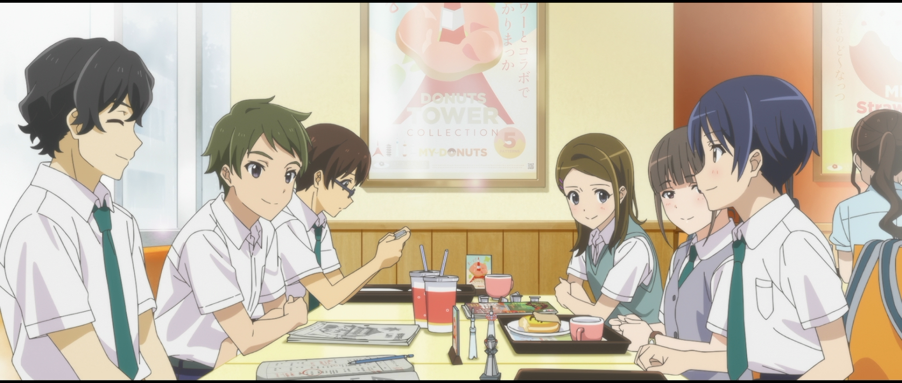
仍然需要说明的是，剧场版对华恋的描写在我看来是增添而不是补完，即我并不认为TV中的华恋是一个不完整的形象，其原因在上面已经讲述过。我们回顾TV可以看到的是华恋即使心中存在着不安与恐惧，却仍然能够去向星伸出手，去改写已成定数的结局，颠覆不可颠覆的命运，这仍然是我们不该忘记的TV告诉我们的华恋身上存在的独特魅力。
重生的舞台
这大概是每个少歌人都想过的问题，在TV讲述完了这么一个完整而独立的故事之后，演绎完了完整的starlight的舞台少女们又要走向何方？剧场版在皆殺し的revue中给出了答案——她们死了。我并没有单独开一段讨论皆殺し的revue，因为要讨论的话就只能讨论假药了，而我不怎么喜欢假药，无论是做还是吃。比起假药我更喜欢谜语一点，所以我说谜语：华恋在皆殺し的revue中并没有出现，这大概是因为她在那之前就死了，不是在之后在光面前她的番茄裂开的时候，而是在演完starlight之后失去新的目标的瞬间。亦或是再之前，在她认定自己的舞台只能是starlight的那时。此时的华恋甚至也可以说是被她自己囚禁在了和光的约定之塔中。

当然，具体的华恋的死仍然发生在和小光重新见面时，在华恋将目光从她已完成的约定和小光身上移开，转到只属于她自己的舞台，并为自己的空无一物感到恐惧之时。值得注意的是恋光在这里的表现和在过去两人许下约定时的表现是完全一致的。这也正是对恋光两人对对方的意义的绝佳概括——“你即是我，我即是你”。
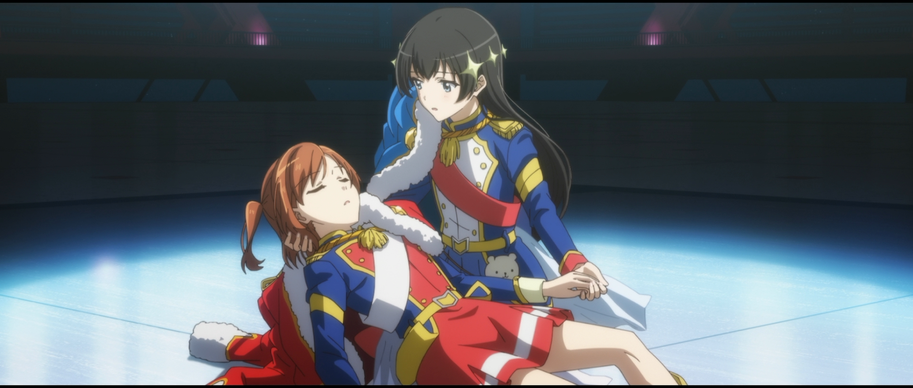
和在过去华恋拉住小光的手要与她一同前往舞台，成为star使光作为舞台少女重生相同，此时光的信落到华恋身上，这或许也是一个不需要被点明的约定——作为舞台少女，无论多少次都要再次踏上舞台。
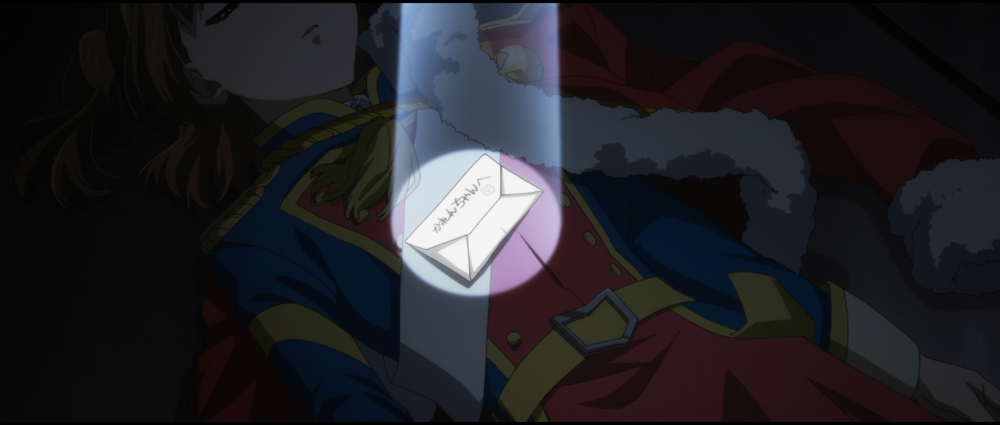
于是登上列车的华恋进行了她的再生产，在这次我们看到的最后的再生产中，华恋过去的一切，包括曾经与小光的约定都被燃烧殆尽，让她得以新生，以崭新的姿态站在舞台上。
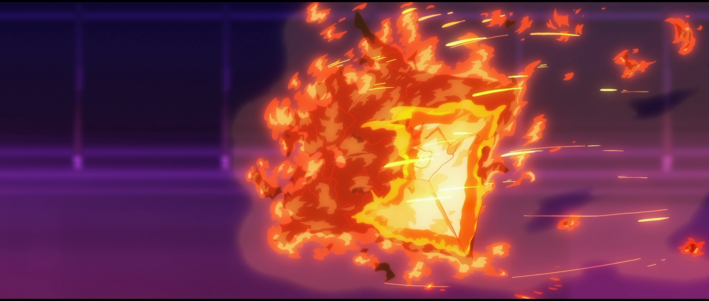
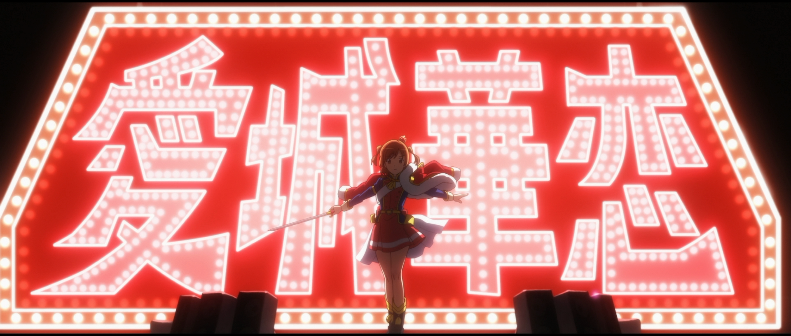
然而wi(l)d-screen baroque在此时还未结束，华恋还有一定要说的最后的台词。值得注意这里并不是一场revue，而仅仅是“最后的台词”。
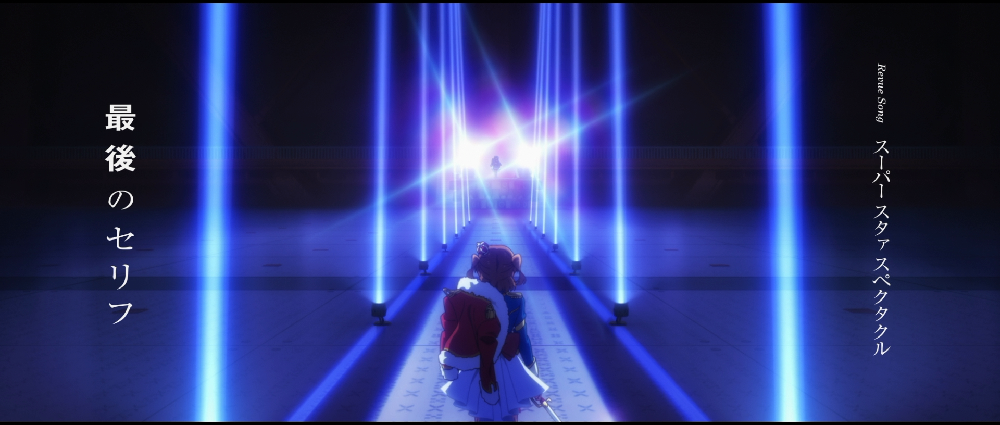
可以采用这样的理解，华恋所需要进行的再生产在回到舞台之前便已完成，她需要最后在revue starlight舞台上让这个舞台落下帷幕。在故事的开端，由于华恋的约定走上舞台的光此时绽放出无比的闪耀，正是这份闪耀促使了华恋的重生，也是切实接收了这份闪耀使得华恋的执着的对象变成了舞台本身。被光的闪耀迷住双眼的华恋说出最后的台词“我也不想输给光”，无数的position zero从她之中迸发而出，将约定之塔撕裂成两端，让她来到了舞台中心。
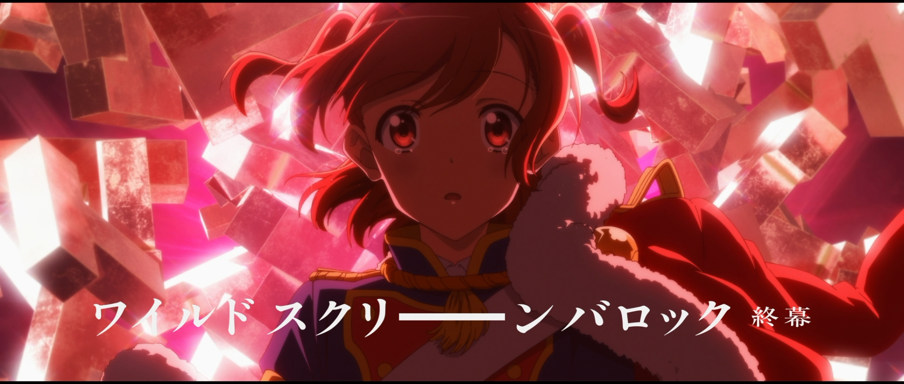
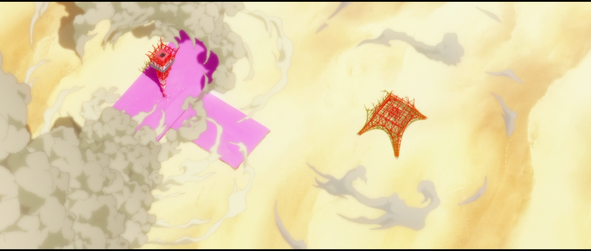
在这场舞台中更为耀眼的确是光，但这不再是互相争夺闪耀的revue，而是让revue starlight画下句号的，舞台少女爱城华恋新生的舞台。正是在这一刻，华恋和所有舞台少女们都终于可以迈出starlight之后新的一步，如同她们摘下的披风一样，可以无依托地在空中自由地被放飞。重新成为心中空无一物的华恋，却也是未被涂画过的白纸，在她的舞台上存在着无限的可能性，而她也定会找到一个又一个仅属于自己的舞台。
舞台之外
写这篇观后感并不是在我第一次看剧场版之后，也肯定不会是最后一次。第一次看完的时候我哭得很厉害，既是因为没有任何预想的初见时面对这样的情感和信息的洪流没什么抵抗能力，也是因为我也很清楚剧场版的结局对我和一起走过三年的少女歌剧来说意味着什么。舞台是消耗物，动画也是，但被消耗的并不是作品本身，而是去观看作品的人。有些感受是只有初见才能体会的到的，有些可能会随着时间的流逝产生变化，有些曾有过的感受可能在从不知道第几次再演开始再也不会出现。我曾很害怕这一点，害怕变成一个完全不一样的自己，害怕曾经有过的情感在某一天再也找不回来，害怕曾经让我感受到无比闪耀的东西也会随着我的改变而褪色，对少女歌剧这样带给了我未曾想象过的感受的作品就更是如此。
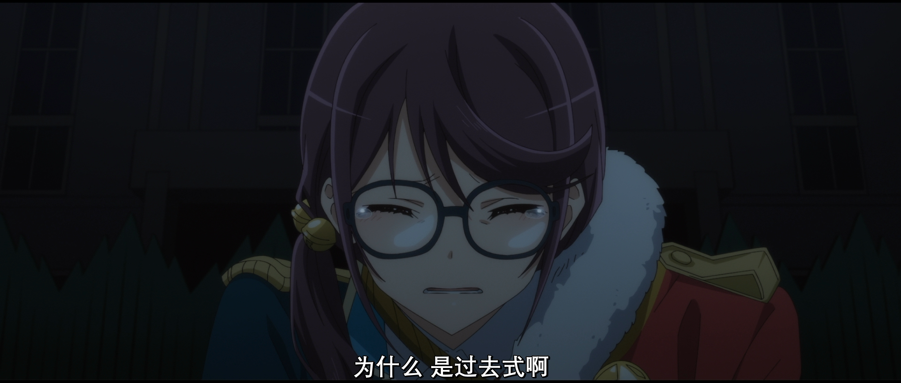
但我想剧场版还是给了我一些改变的。剧场版给我的并非只有结束的信息，重要的是让我感受到了从未感受过的满足。我说不清是为什么，虽然我也没有什么过于耀眼而看不清的未来，但大概这点满足也就够了。我确是最空虚的，也是最满足的。在今后我还会再演不知道多少次，再遥远的之后可能即使再演也唤不起来现在的感受，但这份满足感大概会烙印在我身上，我会一直记得一部叫做《少女歌剧 Revue Starlight》的动画给过我如此多这样新的体验。
但那是未来的事，至于现在，我还有很多没法归纳成语言的感受不知该如何表达。我想我只好复读一遍初看之后那天晚上归结的一句话：
看到最后了，Revue Starlight。